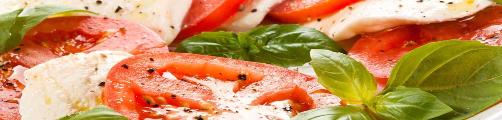

Always fresh and prepared to your preferences!
Our menu changes seasonally in order to incorporate the freshest and boldest ingredients, sourced from local farmers.
Our Menu
Sandwiches
- chicken shawarma
with lettuce, tomato, garlic sauce & pickles - beef shawarma
with lettuce, tomato, parsley, red onion, pickled turnips & tahini sauce - lamb burger
with mixed greens, tomato, red onion & cucumber sauce, served on a brioche roll - grilled chicken breast
with hommus & grilled seasonal vegetables - buffalo chicken breast
with lettuce, tomato, zip sauce & blue cheese, served on a brioche roll - gyro lamb or chicken
with lettuce, tomato & gyro sauce - falafil baked or fried
with lettuce, tomato, pickled turnips & tahini sauce - super falafil baked or fried
with hommus & tabbouleh - old school
bacon, cheddar cheese, mixed greens
Salads
- chicken feta fattoush
our traditional fattoush salad topped with chicken shawarma & feta cheese with fattoush dressing - fattoush
romaine, tomato, cucumber, green pepper, parsley & toasted pita chips with fattoush dressing - tabbouleh
chopped parsley, tomato, onion, mint, tossed with organic quinoa & lemon - anita’s chopped
romaine, chicken breast, tomato, egg, bacon &feta cheese with creamy feta dressing - caesar
romaine, shaved parmesan, chicken breast & zataar croutons with caesar dressing - kale quinoa
kale, organic quinoa, dried MI cherries & toasted almonds with honey vinaigrette - middle eastern michigan
mixed greens, blue cheese, roasted pistachios, dried MI cherries & chicken breast with pomegranate vinaigrette - b money
chick peas, organic quinoa, cucumber, tomato, parsley, roasted pistachios & fresh mint with lemon garlic vinaigrette - greek
romaine, feta cheese, pepperoncini, kalamata olives, tomato, cucumber, chick peas, beets & red onion with house dressing - AK your way
choose any of our lettuces, dressings & up to 5 toppings